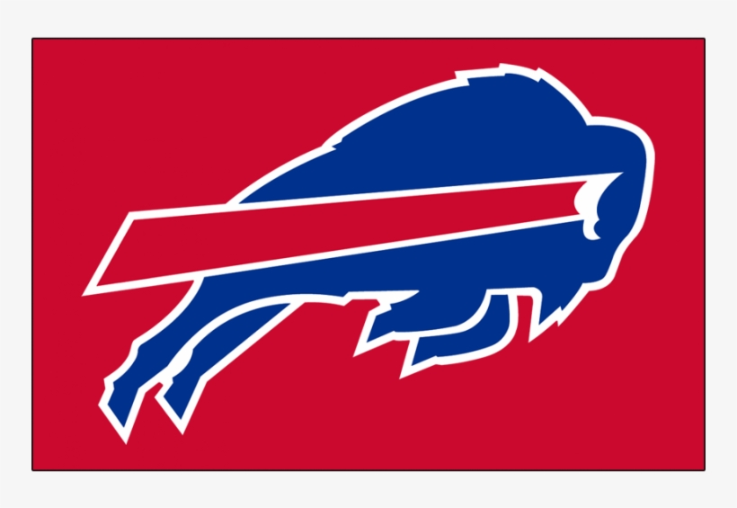
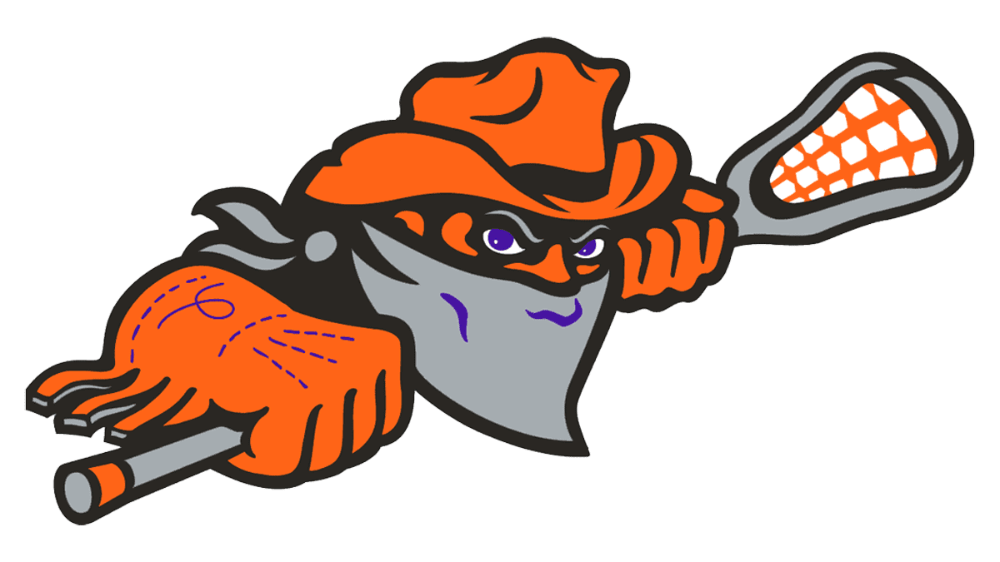

About Me
- I'm a computer science student at SUNY Fredonia from Buffalo NY that enjoys programming and fixing different tech. In my free time, I am either making websites & apps, or I am fixing something for somebody else!
- My programming style is very step by step. I learn easiest on my own by going right into projects and figuring things out as I go. I like the challenge of getting things done that others would not have thought were possible.
- I get motivated by the feeling of making something work that will actually be useful to someone, whether that be simple automation scripts / tools or a full app to make things easier for someone.
- I do have experience with docker / containers. I have successfully built my own cloud storage solution with a working on/off button built into a Python application. This allows me to access my 2TB storage from anywhere, while keeping all user data (sign-ins) properly secured and stored elsewhere.
- I also work a lot with networking. I do have a solid understanding of how everything works together. I have actively worked with several Cisco systems, packet scanning with Wireshark, and I have made multiple personal network tools that have been very useful. I have also worked using Python libraries built for actual network testing / packet behavior, which has helped me learn how everything really works.


Education
Higher Education - College
- Bachelor of Science in Computer Science - SUNY Fredonia (Currently Attending)
- My main focusses are on web development & design, software development (Python, C++, and lots of system based programming), personal/work projects (also including lots of system mods/tweaks, personal management scripts for docker/ files/ etc, and personal games!)
- Captain - of (eSports) Rocket League - For the SUNY Fredonia eSports Team
High School Education
- High School Diploma - Bishop Timon St. Jude High School (Graduated)
- Active member of AV Club, managing audio/video equipment for school events
- Captain - (Varsity) Soccer
IT Experience - Click to Expand!
IT Service Center Staff -- SUNY Fredonia (Current)
- Helped resolve lots of IT support tickets through our Jira ticket system: Providing tech assistance and system maintenance / set up.
- On site issues and tech support helper: I am always moving around and helping over the phone when needed.
- System development / OS config: Set up and work with lots of windows & linux devices + have set up / used GRUB boot setup
- Drive repair / swapping (& network imaging)
- Helped with a full campus wide switch from google to microsoft & dealt with many complaints but found plenty of solutions and helped lots of students & faculty!
- Remote operations (including storage management): Our schools systems notifys us of the pc's with the lowest storage, a small part of my job has been to manage that storage and keep the device usable!
eSports Lounge Attendant -- SUNY Fredonia (Current)
- Watch over 12 gaming PCs and 3 other consoles (Xbox, PS5, Nintendo Switch), making sure everything is taken care of and keeping track of user accountability.
- Managed sign-in and out application, and enforced lounge rules to maintain a respectful and safe gaming lounge.
- Provided in-person support and updates for the people in the lounge and the gaming PCs and consoles at all times.
ITS Internship (Help Desk) -- SUNY Fredonia (Summer 2025)
- Provided in-person, remote, and over the phone technical help for staff and students. (Mainly included swapping drives, taking computers apart, and setting up new ones from the box) (Also included helping several people work through a google to microsoft complete transfer)
- Helped take care of our ticket system. Included helping others with permission issues, hardware setup (fixing Computers, TVs, Phones, and even TouchPads), and did lots of extra work following others and assisting setting up new computers when the school was on break!
- Helped number and track inventory around the entire college campus.
ITS Internship (Programming) -- SUNY Fredonia (2024--2025)
- Created a Windows-specific Python app to manage workers from three workplaces, separating and organizing saved data properly to a cloud database.
- This app can automate schedule generation based on worker availability and the workplaces hours of operation.
- Developed a time sync feature allowing my boss to find last minute shift coverage based on who is available, and to use this app from anywhere, including viewing all of his old schedules.
AV Club -- Bishop Timon St. Jude
- Worked with professional audio/video equipment for school events and livestreams (basketball games, football games, and pep rallies).
- Handled live sound setup during shows / livestreams, helped with video recording, and closing edits on the schools sports games.
- Worked with soundboards, wireless mics, and video cameras.
Skills - Click to Expand!
Programming Languages
- I do have lots of experience with C++, Python, C#, HTML, CSS, JS, SQL, and Bash. I have some background in Java, Kotlin, R, Perl, and even Assembly. I love building websites and desktop apps for myself and my friends, and I have made more than I can keep track of!
Web Dev
- Strong with HTML/JavaScript. I have personally built many web apps and websites, one used by the SUNY Fredonia ITS workplace, customized & built for my boss to make his work easier.
Cybersecurity
- Network Administration: Have experience configuring both routers and switches, diagnosing network issues, and fixing network speeds when there are problems, I can manage my home set-up from anywhere!
- Security / Management: Completed advanced courses including "Computer Security and Ethics," which had a specific focus on Cisco systems and resolving security vulnerabilities. We also did work a lot with packet scannning using wireshark, and I am quick to learning new software.
- Custom Tools: Made personal network scanning tools using Raspberry Pi for automated speed, ping, and even latency testing. At my house with 8 people, I have been able to monitor my network & fix any issues easily!
- Hardware: I set up My home verizon Network, my grandma's home verizon network after a tech set her up with lots of issues, and have assisted in lots of other home network configurations.
Operating Systems
- I have lots of experience using Windows & Linux (Ubuntu/Debian) as I have both a windows laptop, and a GRUB dual-boot setup home pc With windows & linux mint. I have worked a lot with macOS and many Android forms. I am very comfortable using command line, and when I do not know how to do something, I will research and find a solution as soon as I can.
Virtual Machines
- I am experienced setting up / configuring virtual machines, I have lots of experience managing & using them as well. VM's in general were a huge part of my networking ethics course as we did learn how to set up simple fully tracked workplace environments that are safe to use for workplace purposes. (local environments)
Tools Used
- Microsoft Products (Word, Excel, PowerPoint, Access (database side only), Outlook, Calendar, Teams, Authentication, SharePoint) - I worked through a campus wide shift from google to microsoft & had to learn how the entire system worked. I have worked tons of tickets for microsoft related support around campus.
- Google Services (FireBase, Docs, Sheets, Slides, Forms, Calendar, and lots more...)
- Visual Studio / Android Studio - For personal & school projects (system / PC & Mobile / apps)
- Visual Studio Code - My go to for most coding projects, I am very comfortable with extensions, and setting up environments all in app.
- Docker - Have experience with containerization & managing environments for personal projects (Home cloud storage + website kill-switch).
- GitHub (individual & group work) - Lots of use with VS Code, even when I am not using github pages, I do use this for source control so I never make a mistake I can't fix!
- Wireshark – Used for network info / scanning, packet scanning, and troubleshooting for coursework and personal home projects.
- Cisco Routers/Switches – Have hands on experience configuring, managing, and fixing Cisco networking equipment in an academic environment.
- Unity (from game design courses) - Have had to replicate simple games & build my own Idea for a course... My finished personal game was a mini golf game that helped me learn a lot about actual mechanics and design.
- WinSCP (for remote file transfer) - Used first for a class on Systems Programming, later found that this is an amazing way to manage my RasPi and double pc setup from anywhere! I am almost never working on the computer in front of me (I am very comfortable using a few virtual connection methods - If my grandma needs computer help, I can connect in and help her from anywhere around the world!)
- Windows, Linux (Mint & Kali) and RasPi - Hands on experience with setup, troubleshooting, and maintenance for all of these operating systems!
- Terminal / PowerShell (automation, search, running pythons scripts / admin needed scripts, downloads, file editing, and a lot more)
Projects
- C++: Sound Editor (Personal Guitar Pedal App), replicating Files App (windows app with AI integrated), automation tools, windows manipulation to work with some c# apps I made for personal use (remaking fun games, and for database-linked apps)
- Python: I have made countless python apps from simple file finding / editing scripts, pattern parsing, and some automation to building api scripts to work with a schools Database for creating work schedules. I have fun building these apps since you really can build them how you want, and whenever you need them. I have a folder full of python tools for TONS of different things (Windows (how I want it), Network (Testing), Games, and even for prgramming (I tried once to remake my own VS-code but nothing beats the real deal!))
- Web: I have also made / worked on several websites, not only personal, but for work, and my own professional development. I have made an advanced workplace app to make my bosses job a lot easier than it was, along with a simple / fun / easy to use wedding photos website for my brothers wedding. Not only was that a learning experience for me, but it felt really cool to build something for my brother as he wanted it (included QR code so anyone at the wedding could post pictures!). This way he also got all of this for free!
- Bash: I have used this for several of my python applications install & uninstall scripts, and for some system tweaks on Windows
- Homebrew/Modding: installed custom firmware, WiiFlow/USB Loader on Wii to simply advance the machine (holding all games on system instead of needing all of disks we had to search through). This did involve troubleshooting (But proved to me that I can pick up on new things quickly - as this was Visually working with nintendo software, and I had never done something like this before then and have done it multiple times since.)
Programming Projects
🚀 Complete Projects Site
More than 15 Live Web Apps & Interactive Projects
🌐 Explore All Projects Live →My Top Projects
Fredonia Workplace Dashboard
- A web app I built on my own for SUNY Fredonia IT to automate and manage 3 workplaces, making scheduling and other admin tasks easier for both staff and students.
- This all started when my boss at our IT department found out I knew how to code, and came to me with a real issue.
- Building this was a lot of fun, but did take lots of updates. My entire plan was to build it exactly as my boss wanted, and after all of his suggestions along with some student workers feedback, I did complete a web app that is in use today!
- For this site, Student-workers enter their availability, while my boss enters the workplaces hours of operation. The web app processes both in schedule generation, making it so all my boss needed to do is click one button to make schedules.
- This helped save time, reduce errors, and combined all 3 of my bosses workplaces into one simple web app!
NATracker [View on GitHub]
- A group project for real-time file system tracking, designed for workplace use. We built this app using Python!
- I mainly worked on the install & uninstall scripts, but played a big part in building the GUI.
Main Website [View on GitHub]
- My main website [YOUR HERE NOW!], combining tons of my individual sites into a single, modern, multi-page syncronized dashboard with light/dark mode feature.
- I started my main website when I just began programming, and it has expanded from one single inline "index.html" script to a well structured web development showcase project!
- This project is completely public, but it does have LOTS of easter eggs, including pages that open with invisible buttons!
My Portfolio Websites Categories
🎮 Games & Interactive (5 projects)
2048, Hangman, Word Search, Square Chase, Calculator
🏢 Business Tools (8 projects)
Team Manager, Calendar, Resume Builder, File Transfer
🔧 Developer Utilities (5 projects)
Git Tools, Unit Converter, Text Editor, Word Counter
Contact Me
If you'd like to get in touch with me, fill out the form below and I'll reach out as soon as I can!